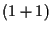
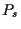
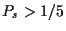
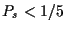

Next: Optimization
Up: O
Previous: Object parameter
One-fifth-rule/
1/5-rule
also 1/5 success rule, rule for controlling the
mutation strength
for the -ES:
Depending on the (measured)
success probability
 the mutation strength is increased after a certain number of
generations, if , and decreased, if .
Hans-Georg Beyer
2002-02-25